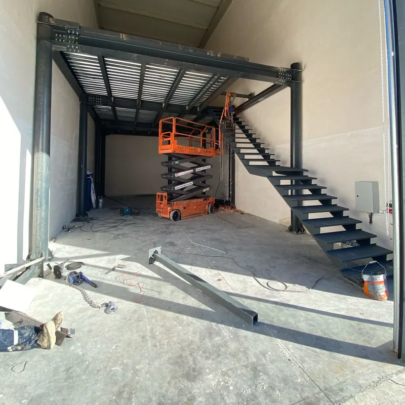
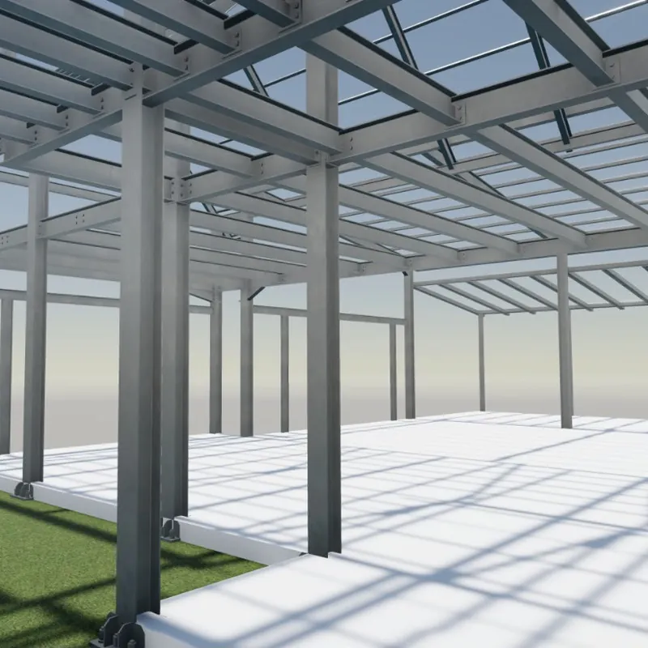
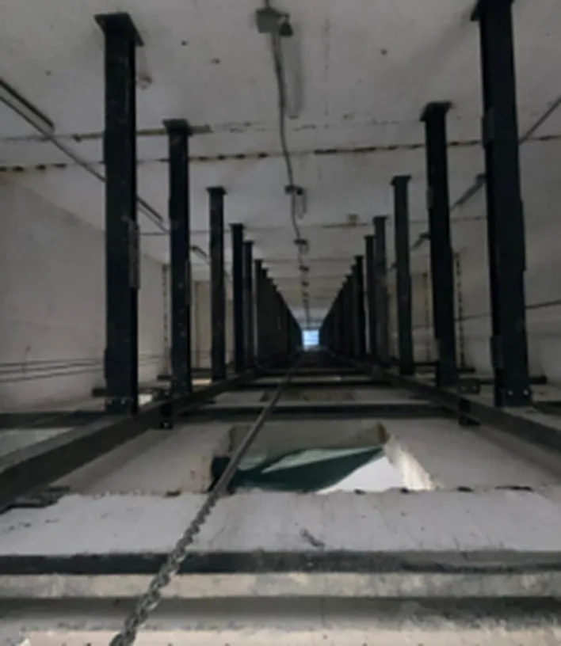
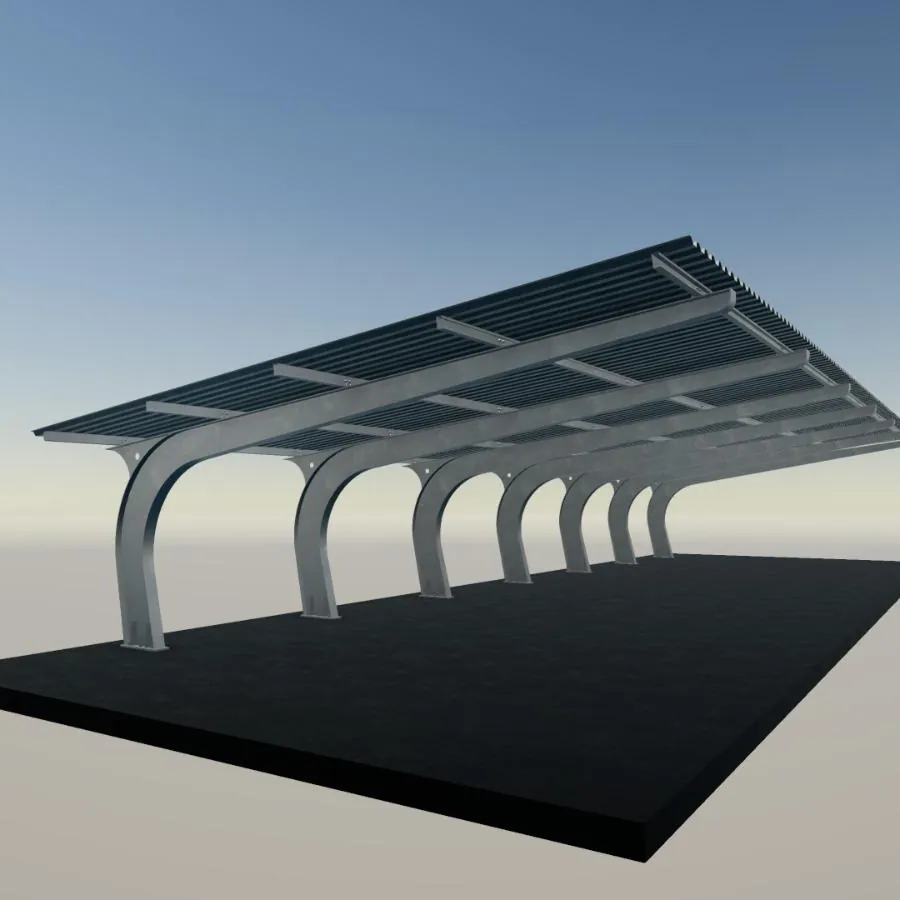
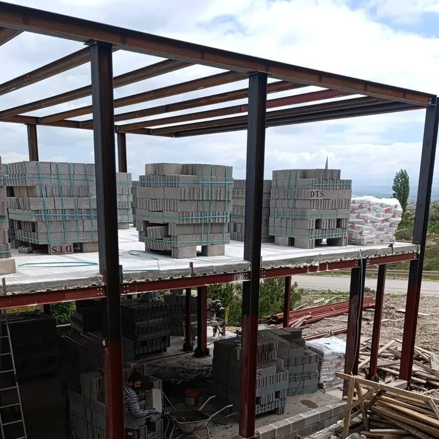
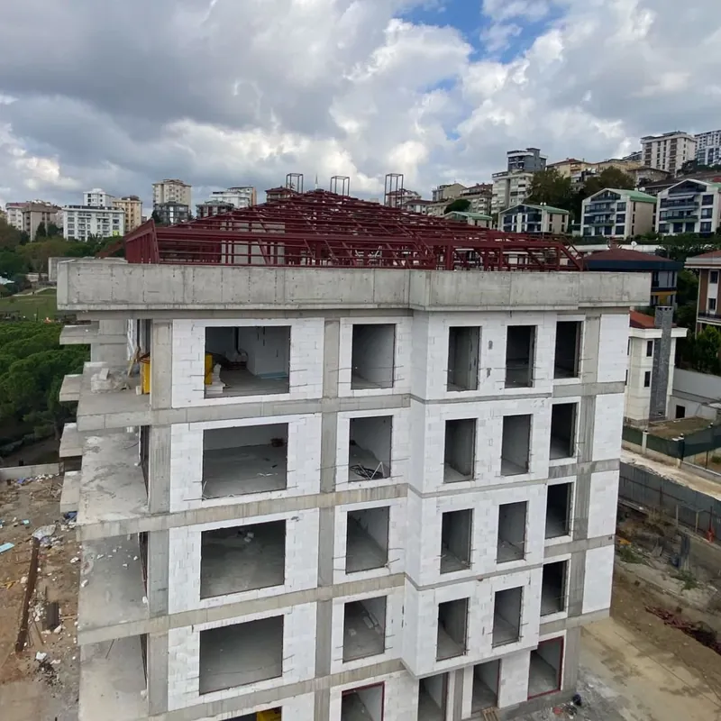
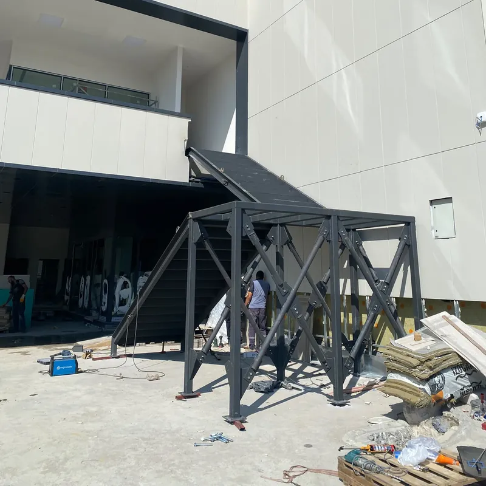

Asma kat
Tavanı yüksek yapılarda çelik kiriş ve kolonla kullanılabilir ek alan yaratıyoruz.
- Depo
- Dükkân
- Atölye
 Maviron Çelik
Maviron Çelik
Hizmetler · 02
Asma katlar, çelik karkas yapılar, endüstriyel yapılar ve çelik çatılar kuruyoruz. Taşıyıcı sistemi statik hesabıyla birlikte projelendiriyor, atölyede üretip sahada monte ediyoruz.

Çelik yapı
Küçük bir asma kattan endüstriyel yapıya kadar statik hesabı, imalatı ve montajı aynı ekip yürütür.
Tavanı yüksek yapılarda çelik kiriş ve kolonla kullanılabilir ek alan yaratıyoruz.

Depo, atölye ve üretim tesisleri için çelik yapıları projelendirip kuruyoruz. Kolon, kiriş, çatı makası ve aşıklar statik hesapla boyutlandırılır; cephe ve çatı trapez sac ya da sandviç panelle kapatılır.

Asansör kuyusu için çelik taşıyıcı sistem kuruyoruz. Kuyu karkası, ray bağlantı konsolları, kapı ve makine kirişleri projeye göre çizilir, atölyede üretilir ve sahada monte edilir. Sonradan asansör eklenen mevcut binalarda da uygulanır.

Tek araçlık carporttan site otoparklarına kadar her ölçüde çelik örtü yapıyoruz. Kolonlar düz ya da eğri formda çizilir; örtü trapez sac veya polikarbonattan seçilir. Giriş ve teras üstleri için sundurmalar da aynı özenle hazırlanır.

Çelik karkas konut ve bungalov yapıyoruz. Hafif, hızlı kurulan ve uzun ömürlü taşıyıcı sistem ahşap ve camla tamamlanır.

Mevcut çatılarınızın yenilenmesini ve yeni başlayan mansard çatı projelerini yönetmeliklere uygun olarak yapıyoruz.

Hastane, ofis ve siteler için dış cephe kaçış merdivenleri tasarlıyor; projeden sahaya kadar yönetmeliğe uygun biçimde yapıp teslim ediyoruz.